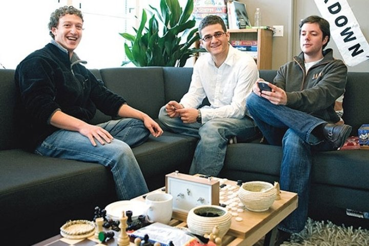
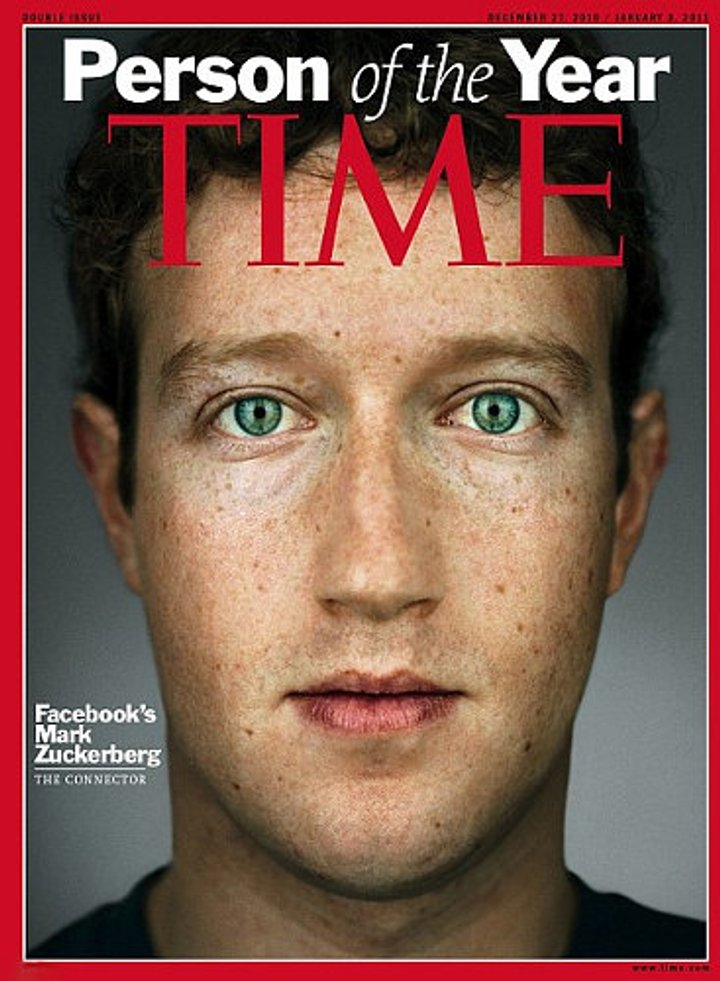

Навчання Марка
Після закінчення початкової школи Цукерберг вирішив розвинути в собі талант
програміста і почав навчання в престижній школі-пансіоні Phillips Exeter
Academy. Там викладачі робили акцент на вивченні програмування
і давньогрецької мови.
Вступ до Гарварду
У 2002 році, несподівано для всіх, Марк Цукерберг вступив до Гарварду на
факультет психології. На рішення хлопця вплинула мама. Але одночасно з
психологією він удосконалювався в програмуванні, для чого відвідував
додаткові курси з інформатики, продовжуючи створювати власні
програми.
Ще на другому курсі вузу він створив програму для студентів CourseMatch,
завдяки якій учні ділилися досвідом один з одним.
Історія Facemash
Пропозиція Марка
У Гарварді не було бази даних з фотографіями студентів, яка була
звичайним явищем у багатьох інших американських університетах. І Марк
Цукерберг запропонував деканам та викладачам університету створити таку
базу в інтернеті, але його пропозиція не схвалили.
Розробка сайту
Після цього
Марк зламав університетську базу даних і став активно розміщувати
фотографії студентів парами на спеціально створеному ним сайті, де
пропонував проголосувати за одну з двох фотографій, яка була більш
привабливою.
Наслідки
Протягом декількох годин сайт відвідало 500+ відвідувачів. Через
скандалу, що стався в Гарварді з цього приводу, ресурс вирішили
закрити. Багато студентів просили керівництво університету відновити
роботу ресурсу і після активного тиску студентів рішення про закриття
сайту було скасовано.
Марк стал снова успешно развивать возрожденный студенческий сайт,
который впоследствии превратился в глобальную социальную сеть Facebook.
Історія створення соціальної мережі Facebook
На основі програмного забезпечення Facemash Марк Цукерберг створив
комунікаційний шедевр у вигляді соціальної мережі Facebook,
яка розширила спілкування студентів Гарварда по локальній мережі. В цьому
йому допомогли однокурсники Кріс Хьюз, Едуардо Саверін і Дастін
Московіц. Хлопці буквально за тиждень "зліпили" новий сайт, який став
в десятки разів популярнішим, ніж Facemash.

Марк Цукерберг, Дастін Московіц и Кріс Хьюз
Успіх проекту
За лічені дні проект Facebook переріс рамки гарвардського кампусу, до
нього приєдналися університети Ліги Плюща в Бостоні, Нью-Йорку,
Массачусетсі і Канаді. Незабаром приєдналися Стенфорд і Колумбійський
університет.
Ідея соціальної мережі
Ідеєю соціальної мережі було розміщення користувачами на своїх
сторінках фотографій і інформації - від наукових інтересів до гастрономічних уподобань, за рахунок чого в найкоротші терміни в мережі
з'явилися групи за інтересами, які розширювалися щодня.
Інвестиції та покидання університету
Незабаром творець Facebook Марк Цукерберг зрозумів, що для розвитку проекту
потрібні чималі інвестиції.
Переїзд в Пало-Альто
Влітку 2004 року програміст переїхав в Пало-Альто і зареєстрував свій
проект як юридична особа, ставши генеральним директором компанії Facebook.
Розвиток Facebook
Пізніше Марку Цукербергу вдалося залучити до проекту заможних
інвесторів, які допомогли йому розвинути соцмережа до глобального рівня.
Серед помічників хакера виявилися культова фігура американського
інтернету і творець програми для обміну файлами Napster Шон Паркер,
співзасновник платіжної системи PayPal Пітер Тіль, який вклав у справу
півмільйона доларів, і творець першої ділової соцмережі Linkedin Рід
Хоффман.
Купівля доменого ім'я
У 2005 році Марк Цукерберг за 200 тисяч доларів придбав домен
Facebook.com. Тоді в соціальній мережі налічувалося понад 5 мільйонів
користувачів, число яких росло з кожним днем, що дозволило Facebook
залишатися сьомим за популярністю американським сайтом.
Принципові відмови
Тим самим Марк зацікавив акул IT-бізнесу, які пропонували йому
продати проект. Але пропозиції не мали продовження - Цукерберг навідріз
відмовився продавати Facebook, продовжуючи розвивати мережу на рекордній
швидкості.
Продаж долі Facebook
Зірковий час Марка Цукерберга настав у 2007 році, коли Microsoft
оцінила його проект в 15 мільярдів доларів, купивши 1,6% акцій компанії
за 240 мільйонів доларів.
Відкриття коду платформи(API)
У 2008 році програміст відкрив міжнародну штаб-квартиру компанії в
Дубліні, а в 2009 році публічно заявив про першого прибутку. З цього моменту
соцмережа Facebook відкрила коди платформи для всіх бажаючих створювати
для проекту нові додатки, завдяки чому на сайт сьогодні щодня
завантажується близько 140 нових аплікацій.

Журнал Time назвав засновника соціальної мережі Facebook.com
26-річного Марка Цукерберга Людиною року(2010 року).